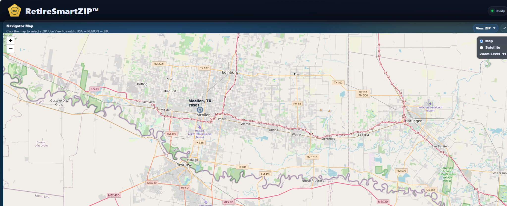
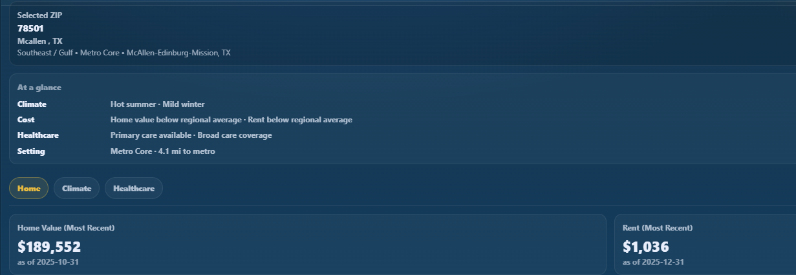
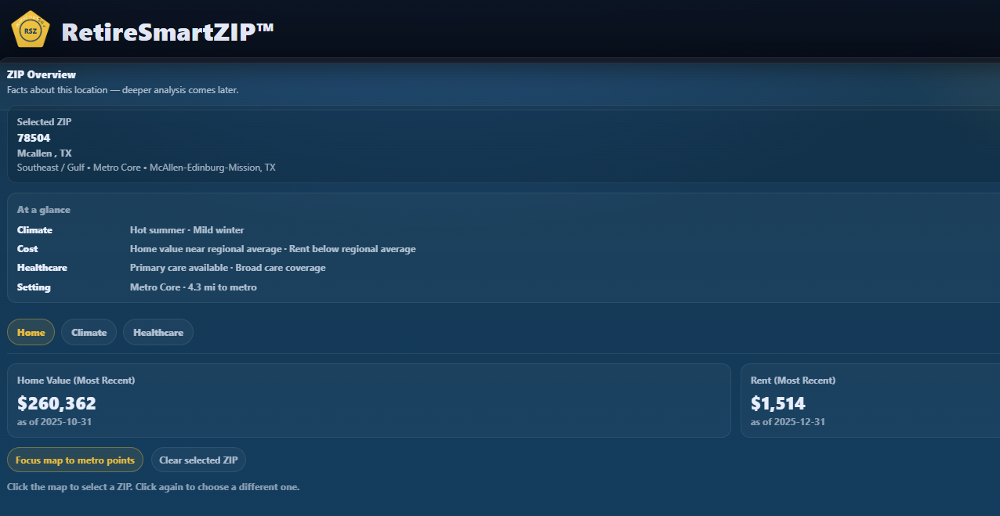
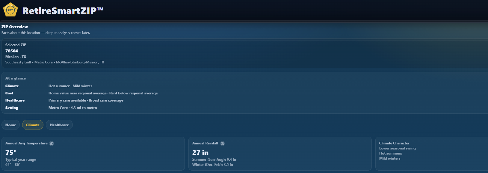

The article asks the right question
A recent GOBankingRates article highlighted cities where retiring on roughly $1,500 per month might be possible for some households. That kind of headline grabs attention because it touches one of the biggest retirement fears people have: can I afford to stop working?
The article is useful as a starting point. It gets people thinking. But city-level retirement lists can only go so deep. A city may sound affordable on paper while specific ZIP codes inside that same city tell a different story.
Source inspiration: GOBankingRates article, “5 Cities Where You Can Retire for $1,500 a Month and Enjoy Summer Year-Round.”
Why McAllen, Texas is a good test case
McAllen is exactly the kind of city that can appear on an affordability list. Warm climate. South Texas location. Lower housing costs than many parts of the country. But the real question is not whether McAllen works. The real question is whether a specific McAllen ZIP works.

McAllen 78501 supports the article’s basic premise
When we look at McAllen ZIP 78501, the affordability argument starts to make sense. It is not a promise. But it is the kind of ZIP that helps explain why McAllen lands on a lower-cost retirement list.

What stands out in 78501
- Home value sits well below many national retirement markets.
- Rent near $1,000 keeps the headline budget at least plausible.
- Climate remains warm with mild winters.
- Healthcare access is present, even if not the main story here.
What it means
If someone sees McAllen on a “retire on $1,500” list and wants proof the idea is directionally reasonable, 78501 is the kind of ZIP that supports that case.
McAllen 78504 shows why city-level headlines can break down
Now look at another McAllen ZIP: 78504. Same city. Different ZIP. Different financial picture. This is where ZIP-level analysis matters.

Why 78504 is different
- Rent is about $1,514, which nearly consumes the full headline budget by itself.
- Home values are materially higher than 78501.
- The same city can contain meaningfully different cost layers.
What it means
A city-level article can be directionally right while still missing the most important retirement question: which ZIP inside that city actually fits the budget?
Higher-cost ZIPs can still win on climate and healthcare
The point is not that 78504 is bad. In fact, it becomes attractive for other reasons. The climate profile is warm and stable, and the healthcare footprint is stronger. That is exactly why retirement choices are tradeoffs, not headlines.

That means 78504 may still be the better fit for some retirees — just not for someone trying to force the simplest possible “$1,500 a month” narrative.
So, can you really retire on $1,500 a month?
Sometimes, yes. But not as a blanket statement. Even in the same city, one ZIP may look workable while another pushes past the budget on rent alone.
That is why broad retirement articles are helpful for ideas, but not enough for decisions. The deeper truth is that retirement affordability depends on:
- Housing pressure in the exact ZIP you are considering
- The tradeoff between affordability and stronger amenities
- Your retirement income mix and timing
- The gap between “technically affordable” and “comfortably sustainable”
Why we built RetireSmartZIP
RetireSmartZIP was built around a simple idea: retirement planning should not stop at broad averages.
If someone is seriously asking whether they can retire on a limited monthly income, they deserve more than a list of cities. They deserve a better way to compare places, understand tradeoffs, and narrow the field based on what matters to them.
That is the goal of the initial release of RetireSmartZIP™ — to help people explore retirement location fit with more precision and less guesswork.